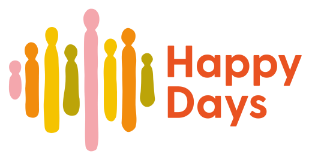

Der alle kan finne sin rytme. Bli med i vårt fellesskap med ulike talenter!
Sound of Happiness ble etablert i 1988 som et musikktilbud for mennesker med utviklingshemming. I begynnelsen bestod tilbudet av fem medlemmer som spilte sammen i bandet Roaders.
Bli med


Happy Days
Sound of Happiness ble etablert i 1988 som et musikktilbud for mennesker med utviklingshemming. I begynnelsen bestod tilbudet av fem medlemmer som spilte sammen i
Nettbutikk